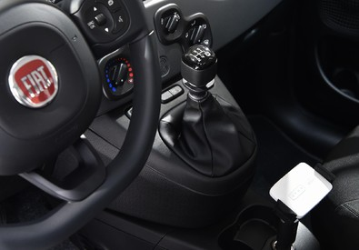
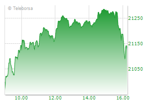

Da Fca centinaia di milioni
a Tesla per i crediti Co2
Fiat Chrysler pagherà "centinaia di
milioni di euro" a Tesla per calcolare i veicoli elettrici del
produttore americano nella propria flotta e rispettare così i
parametri Ue in fatto di emissioni di Co2 previsti per il 2020.

Vinitaly: vino vale 14,3 mld (+2,8%) di consumi in Italia
Cresce del 2,8% a valore sul mercato interno, nel 2018 rispetto all'anno precedente, il valore del vino italiano che al consumo, nei bar, ristoranti e sugli scaffali dei supermercati lungo la Penisola raggiunge i 14,3 miliardi di euro, per un volume di vin...
Banche: First-Cisl, un anno da Ceo vale fino a 123 da impiegato
 Economia.
Economia.
La nuova commissione d'inchiesta parta dalle retribuzioni dei manager. L'analisi del sindacato sui vertici bancari
Assunzioni più facili
per gli enti locali
Le norme contenute nel decreto Crescita

Lavoro: allarme Fp-Cgil, 18mila esuberi nei servizi ai migranti
Di questi, 5 mila sono già coinvolti dall'avvio delle procedure di licenziamento, su un totale di circa 40 mila addetti ai servizi di accoglienza e integrazione

Blutec, Di Maio firma l'integrazione per i salari
Decreto per autorizzare l'Inps all'erogazione dell'acconto di "sei mensilità di integrazione salariale straordinaria in favore di un numero massimo di 691 lavoratori"

Moscovici con Tria: 'L'uomo giusto al posto giusto'.
 Economia.
Economia.
Il titolare del Mef: 'Non mi sento sotto attacco, avanti tranquilli'
Istat, per il Pil italiano segnali positivi ma restano deboli
"Le prospettive dell'economia internazionale restano caratterizzate dalla presenza di rischi al ribasso. Il processo di Brexit è rimasto incompiuto e i negoziati tra Stati Uniti e Cina sono ancora in corso.

Vinitaly, a Verona la fiera più grande di sempre
La 53/ma edizione del Salone Internazionale dei Vini e dei Distillati (7-10 aprile, Veronafiere) è sold out dallo scorso novembre nonostante l'aumento della superficie netta disponibile. Tra le novità, il nuovo salone Vinitaly Design e l'Organic Hall.

Salini, mega contratto da 3,2mld in Australia
 Economia.
Economia.
Salini Impregilo annuncia la firma di un contratto da 5,1 miliardi di dollari australiani, pari a circa 3,23 miliardi di euro, per la costruzione dell'impianto idroelettrico Snowy 2.0 in Australia.
Unicredit, guarda a Commerz se salta intesa con Deutsche
 Economia.
Economia.
Secondo il Financial Times, Unicredit prepara un'offerta multimiliardaria per il controllo di Commerzbank visti i segnali di difficoltà che stanno incontrando i piani di fusione tra la banca tedesca e la 'rivale' Deutsche Bank.
Alitalia: Toninelli, non impiccarsi sulla data
"Io non mi impiccherei su una settimana in più o in meno dopo decenni all'interno dei quali Alitalia è stata semplicemente foraggiata ma non rilanciata con soldi pubblici".

Piaggio Aero: verso apertura Cigs per 1.027 dipendenti
Il commissario di Piaggio Aerospace Vincenzo Nicastro intende aprire a breve una procedura di cigs che partirebbe a inizio maggio.

Governo: Bugno si ritira da Stm ma resta consigliere di Tria
M5s all'attacco. Castelli: 'In contrasto con il governo'
 Claudia Bugno in una foto d'archivio
Claudia Bugno in una foto d'archivio
Cantieri, soglia subappalti
potrebbe salire al 50%
 Economia.
Economia.
Potrebbe salire dal 30 al 50% la soglia, calcolata sull'importo complessivo del contratto, per affidare i lavori in subappalto. E' quanto prevede l'ultima stesura in bozza del decreto cantieri.
Poste a Salone del Risparmio con consulenza 'evoluta'
Per Poste Italiane consulenza significa "inclusione, responsabilità, trasparenza, equità e sostenibilità".

Sindacati, Di Maio sblocca decreto ammortizzatori
 Economia.
Economia.
Il ministro ha firmato il decreto che sblocca le risorse per 60mila lavoratori nelle 18 aree di crisi complessa in Italia
Reddito: Inps, online il nuovo modulo per la richiesta
Recepite le modifiche introdotte in sede di conversione del Decreto Legge
 Foto d'archivio
Foto d'archivio
Borsa
Indici
| Indice | Valore | Var.% |
|---|---|---|
| FTSE Italia All-Share | 23828.75 | 0.25 |
| FTSE Italia Mid Cap | 39199.5 | 0.30 |
| FTSE Italia STAR | 35949.57 | 0.25 |
| FTSE MIB | 21758.61 | 0.24 |
Spread
| Indice | Ren. | Spread | Var.% |
|---|---|---|---|
| Spread BTP-Bund | 2.48 | 247 | -1.72 |
| Spread BONO-Bund | 0.95 | 95 | -4.52 |
| Spread OAT-Bund | 0.29 | 29 | -8.41 |
Grafico

Maggiori rialzi
| Nome | Var.% |
|---|---|
| DIGITAL BROS | 12.84 |
| NEUROSOFT | 11.11 |
| SALINI IMPREGILO | 9.69 |
| CHL | 6.90 |
| COVER 50 | 6.80 |
| GEL | 6.61 |
| BUZZI UNICEM RNC | 6.13 |
Maggiori ribassi
| Nome | Var.% |
|---|---|
| RESTART | -5.69 |
| DIGITOUCH | -4.93 |
| KI GROUP | -3.60 |
| CAIRO COMMUNICATION | -3.24 |
| ICF GROUP | -3.08 |
| EUKEDOS | -3.00 |
| ILLA | -2.91 |
Cambi
| Moneta | Valore | Var.% |
|---|---|---|
| Dollaro USA | 1.1233 | 0.12 |
| Franco svizzero | 1.1235 | 0.25 |
| Lira sterlina | 0.8594 | 0.61 |
| Yen | 125.44 | 0.34 |
| Dollaro australiano | 1.5787 | 0.04 |
| Dollaro canadese | 1.503 | 0.29 |
| Dollaro di Hong Kong | 8.8173 | 0.13 |
Top Traded
| Nome | Valore | Var.% |
|---|---|---|
| INTESA SANPAOLO | 2.234 | 0.00 |
| UNICREDIT | 12.026 | -0.69 |
| ENI | 15.848 | 0.58 |
| ENEL | 5.694 | -0.02 |
| STMICROELECTRONICS | 15.585 | 2.91 |
| FIAT CHRYSLER AUTOMOBILES | 13.732 | 0.01 |
| GENERALI ASS | 16.63 | -0.45 |


![Archivio storico Generali. La Direzione a palazzo Geiringer (Trieste, [1906-1910]) / Ufficio stampa Generali (ANSA)](/webimages/img_85x60/2017/9/13/f878faf74bfd3983594a9d7fa3d33f63.jpg)


Video Economia
Video

06 aprile, 17:27
Auto, si sblocca ecobonus, Corte Conti registra decreto
 06 aprile, 17:00
06 aprile, 17:00
Sindacati tornano in piazza, maggio e giugno caldi
 06 aprile, 16:01
06 aprile, 16:01
Banche:Di Maio,dobbiamo risarcire, con decreti o senza

Prada adotta nuove soluzioni per le vendite 4.0
Per gestione rete negozi ed esperienza acquisto personalizzata


Imprese: Cciaa mette in campo tre nuovi bandi
Impegno complessivo è di 600mila euro circa
Italia-Vietnam: incontro Unioncamere Veneto con delegazione
Rappresentanza Ba Ria-Vung Tau, mercato in espansione
Lavoro: 'Dopodomani' mappa esigenze imprese da qui a 5 anni
Progetto pilota della Regione per formazione e lavoro del futuro
Premi: "Raccontami l'Umbria", premiati i vincitori
Istituito da Camere commercio Perugia e Terni per giornalisti
Real Estate
Infrastrutture: Anpsc, non solo Tav, anche reti energia e It
'Pilastro per processo di crescita'.Convegno il 16 aprile a Roma
Fmi: calo prezzi case pesa su stabilita' finanza, vigilare
Da recente rapido aumento timori di una flessione
Criptovalute news
Innovazione: Banzi, con Calenda cose positive, oggi paroloni
Soldi Stato in start-up? Meglio incentivare centri competenza
Digitale: Anitec-Assinform, in 2018 mercato italiano +2,5%
vai
Piani Individuali di Risparmio
vai
Piccole e Medie Imprese
Imprese: 10.000 startup in Italia
Ricerca Acri, sono 53.700 i lavoratori


Comunicati stampa
- Verimatrix annuncia un’integrazione di API fra VCAS Ultra e Amazon Web Services (AWS) per la trasmissione di video in tempo reale sicuri
- Merz lancia il nuovo filler dermico Belotero® Revive
- Tempo annuncia cambiamenti al vertice
- Verimatrix Announces API Integration between VCAS Ultra and Amazon Web Services (AWS) for Secure Live Video
- Gilead Submits Supplemental New Drug Application to U.S. Food and Drug Administration for Once-Daily Descovy® for HIV Pre-Exposure Prophylaxis
La responsabilità editoriale e i contenuti di cui al presente comunicato stampa sono a cura di Business Wire
Press Release


ANSA Video

L'ospedale cambia faccia, arrivano le cure 4.0 da casa


ANSA Foto

Onna, ricordo speciale per le vittime del terremoto


ANSA Magazine
Ansa Magazine numero: aMag #127
Il bilancio nel decennale dal tragico terremoto
L'Aquila, ricostruzione ancora a metà
Ansa Magazine numero: aMag #126
La più imponente esercitazione dell'Alleanza Atlantica
War Games Nato in Norvegia
Ansa Magazine numero: aMag #125
I drug-test non le rilevano. 60 nuove sostanze nel 2018
La droga invisibile che la passa liscia
Ansa Magazine numero: aMag #124
Sono 5 milioni in Italia, tanti i bambini. Ma il dato è in aumento
Viaggio tra chi aiuta i poveri

Ansa Magazine numero: aMag #123
A Lourdes i nuovi pellegrini sono precari
"Madonnina mia... trovami un lavoro"

Ansa Magazine numero: aMag #122
Da bulimia ad abusi, aiuta dove le parole non arrivano
Gioco con la sabbia diventa terapia

Ansa Magazine numero: aMag #121
Al via la cooperazione sostenuta dall’ ICMP, International Commission on Missing Persons
Sulle tracce dei migranti dispersi

Ansa Magazine numero: aMag #120
Viaggio nelle economie sociali dei penitenziari e non solo
Se è il lavoro che salva il carcere

Ansa Magazine numero: aMag #119
Il 'sogno' di tornare da Harvard, e i ragazzi progettano robot a scuola
La città si fa 'smart', anche in Italia

Ansa Magazine numero: aMag #118
In corso il restauro dei due manoscritti in un Istituto a Roma
Nuova vita per il Codice Da Vinci

Ansa Magazine numero: aMag #117
Una ricostruzione ancora a due velocità, a 9 anni dal terremoto
L'Aquila, chi torna nel centro?

Ansa Magazine numero: aMag #116
Viaggio tra i Copti, minoranza che vive tra paure e speranze
Cristiani d'Egitto, vite in trincea

Ansa Magazine numero: aMag #115
Con il drone alla ricerca di tesori in un'area ad elevato rischio sismico
Mistero Selinunte, la città degli Dei

Ansa Magazine numero: aMag #114
Numerosi 'special address' incluso quello del premier Gentiloni
Forum di Davos, the politica first

Ansa Magazine numero: aMag #113
Una scuola di vita nel rettangolo di gioco del basket in carrozzina